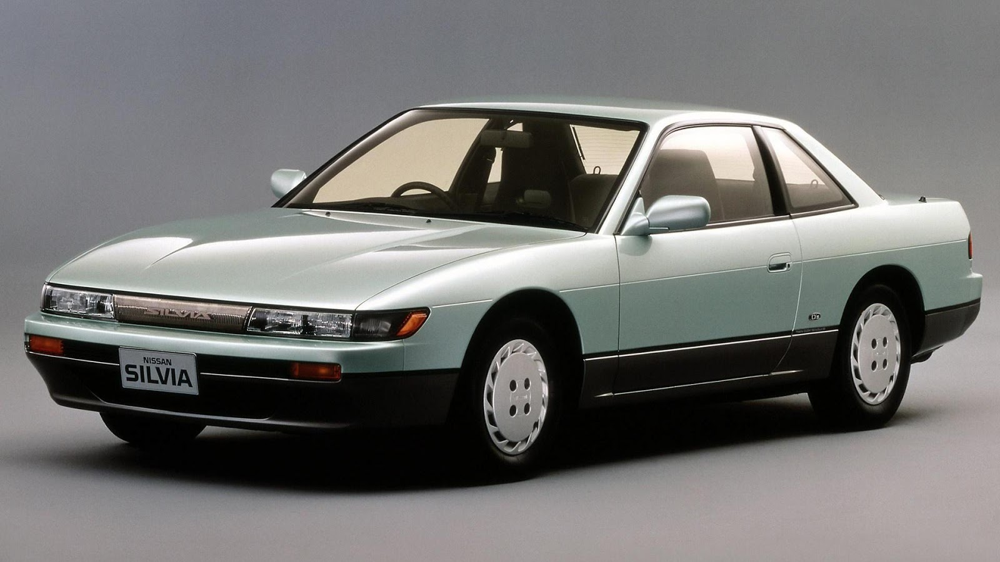

O Ford GT 2020 equipado com um motor 3.5 litros V6 com dois turbos que produz de 660 cavalos e 76 kilos de torque te leva de 0-100km/h em 3,5 segundos.
Tem um design incrivel e ainda conta com muita história nos esporte pois vencer le Mans 24HRS em 2016.
Pela história e design este carro entra na lista.
A Lamborghini Murcielago LP 670-4 SV conta com um motor V12 de 6,5 litros naturalmente aspirado de 661 cavalos e 67 kilos de torque te leva de 0-100 em 3 segundos.
A veção SV é uma edição especial ainda mais veloz que a murcielago normal e conta com retoques na aerodinamica do carro.
Desde pequeno gostei muito deste carro não pode faltar.
O lexus LFA é um incrivel carro japones com um motor V10 de 4.8 litros que produz 553 cavalos e 46 kilos de torque faz 0-100 em 3.7 segundos.
Esse carro faz um dos melhores sons que um carro pode fazer por conta do V10 naturalmente aspirado e da rotação alta.
Com um ronco que impressiona e por ter sidomeu primeiro carro favorito ele entra na lista.
O ford mustang GT já é um carro legal mas com a edição mach 1 ele vira outro mostro totalmente diferente com o motor V8 de 5 litros de 480 cavalos e 57 kilos de torque vai de 0-100 em 4,3 segundos.
Conta com um cambio manual de seis marchas e com uma suspeção revisada.
Um design fantastico e o conjunto de cambio e motor esse carro entra.
A mazda não é uma impresa muito conhecida no brasil mas sem sombra de duvidas ela ja criou carros interessantes como o RX7.
Um coupe leve de 1271 kilos com um motor rotativo de 1,3 litros com dois rotores e dois turbos motor que produzia 270 cavalos e 31 kilos de torque
O RX7 ia de 0-100 em 5 segundos.
Por ter muitas modificaçoes disponiveis no mercado e por ser diferente com um design legal ele entra na lista.

A nissan é outra que aqui no brasil poucos a sabem dos seus carros esportivos mas o silvia S13 foi uma das melhores opçoes de esportivos acessiveis.
conta com um motor 4 cilindros 2 litros com um turbo o carro tinha 205 cavalos e 28 kilos de torque levava o carro de 0-100 em 7.1 segundos.
O carro entra na lista por ser uma plataforma muito lega para varias modalidades pois conta com muitas modificaçoes no mercado,eu gosto por ser leve e ser tração trazeira.